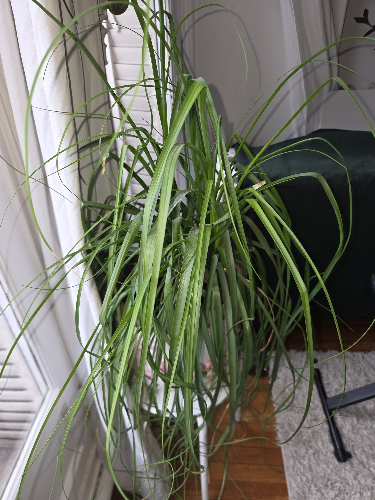

Base renflée qui ramollit
Cause probable : excès d'eau et pourriture.
Que faire : arrêter d'arroser.
Pied d'éléphant. Facile.
Plante de soleil et de sécheresse : beaucoup de lumière, très peu d'eau, et un hiver plutôt frais.

Ce sont les mêmes cases que sur la page d'accueil.
Ce navigateur n'enregistre pas les coches.
Cause probable : excès d'eau et pourriture.
Que faire : arrêter d'arroser.
Cause probable : phénomène courant, pas alarmant à lui seul.
Que faire : rien de particulier si c'est le seul symptôme.